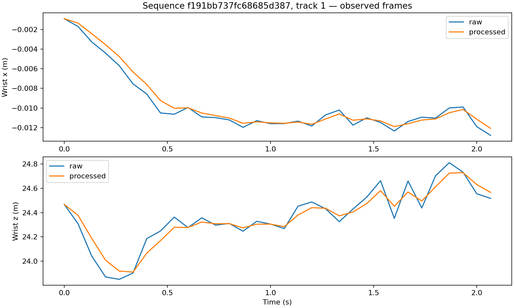

Raw predictions are retained beside processed MANO and geometry.
Interpolated hands are explicitly labelled and excluded from detection and accuracy evaluation.
Lower motion speed does not imply better accuracy; evaluate against ground truth.
| Item | Value |
|---|---|
| frames | 32 |
| sequences | 1 |
| tracks | 4 |
| detected_hands | 88 |
| interpolated_hands | 7 |
| smoothing_seconds | 0.08 |
| mean_joint_speed_m_s | {'raw': 6.4700402091415565, 'processed': 4.571125153573219} |
